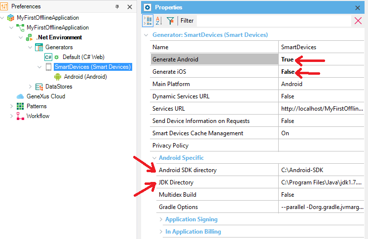

My first Offline Native Mobile application
This document is a step by step explanation of how to create a simple native offline application with GeneXus. Before starting with the tutorial, please check that the prerequisites are correctly installed, as also it is recommended you to briefly look at the Offline Applications overview and the Offline Native Mobile applications architecture documents for better understanding of how the Offline applications works. In this sample, the application uses a local SQLite database on the device and communicates via REST services with a NET Generator web server, which persists data on an MSSQLServer database, to perform synchronization processes. If you are using another web generator, like the Java Generator, or another DBMS, the steps are the same but the prerequisites may change. Step 1: Create a new Knowledge BaseOpen GeneXus and create a new Knowledge Base. Select your preferred Prototyping Environment.
Step 2: Model the applicationCreate the Customer and Company Transaction objects with the following structure: Please note that predefined domains were used for certain attributes and, in both Transactions. Note that each identifier attribute is based on the GUID data type with the Autogenerate Guid property set to True. Step 3: Apply the Work With patternApply the Work With pattern on both transactions. To do so, for each Transaction, click on the Patterns tab, then choose Work With tab, and check the checkbox as shown below and save: Step 4: Customize some layouts (Optional)Once the Work With pattern is applied to both transactions, you are free to modify their Layouts, Events, and many other components. From the Toolbox, drag & drop the control Attribute/variable in order to insert attributes you want to see on the Customer list screen. For example, CustomerEmail: You can remove the label of the attribute by setting the Label position property value to "None":
Step 5: Create the main Menu of the applicationCreate a Menu object called Menu. This object is like a menu; you can use it to call the Work With objects created in the previous Steps. To do this: right-click in the Items option to add actions to the Menu. You must select the WorkWith<TransactionName> objects from the Select Object dialog: When you select a WorkWith<TransactionName> object, the associated Event to this action is generated automatically:
Event 'WorkWithCustomer'
WorkWithCustomer.Customer.List()
EndEvent
Event 'WorkWithCompany'
WorkWithCompany.Company.List()
EndEvent
Step 6: Shift your application to the offline architectureChange the Connectivity Support property of the Menu object to "Offline". This step is crucial, it means a huge change in the application architecture. If you want to learn more about this, read the Offline Native Mobile applications architecture document. Step 7: Edit the Native Mobile Generator PreferencesChange the Native Mobile Generator Preferences to choose how is your application built. You can build and run your application in any of the platforms mentioned in the Offline Applications Requirements document.
 Important note: Because the Offline Native Mobile applications are fully generated in native code, the applications must be compiled and installed on Devices or Simulators of the corresponding platforms. This means that the KBN application does not work with Offline applications. Step 8: Deploy your application to the cloud (Optional)If your computer and the Device are not on the same network, and/or you prefer a simpler solution for wireless prototyping, you can deploy your app to the cloud (this option is recommended for your first deploy). To do this, go to the Generator properties, and set the value "Yes" to the "Deploy to cloud" property, as shown below: Step 9: Build your applicationPress F8 to call the "build all" command and build the entire application. This step is necessary, at least for the first time you build your application. Note: If you have skipped the Step 8, as it is the first time you build the application, GeneXus needs to know the database connection information. The following output is shown, as well as the Impact Analysis, indicating which tables must be created on the database. Click on the "Create" button in order to create them. Once the Menu object called "Menu" is built, a new object appears right below the Menu: it is the Offline Database object. This object is in charge of selecting which tables are being created in the local database of the device once the application is installed, as also this object properties can manage how is the Data Synchronization done, among other features. In the build process, after the Offline Database object appears, the Offline Database Object Navigation Report is shown, giving to you all the related information about the tables which are going to be synchronized in the device with respect to the server. Step 10: Run your application!Once the "build all" process finishes, to run your application in your Android Device or Android Emulator, first right-click the "Menu" Menu object and set it as the Startup Object. Finally, press F5 and the application is going to be installed in the Android Device or Android Emulator. This depends on whether the Android Device is plugged into the computer or not. How does this application work?As mentioned at the beginning of this document, this application uses a local database in order to work. This means that all data the application uses is from the local database. In addition, all insertions, deletions, and updates are made in the local database. The first time the application is installed, the local database is created inside the Device. After that, a reception synchronization process is executed in order to receive all data from the server and store that data into the device. Once both, the device and the server, are synchronized, you are free to use the application either the device has connected to the internet or not. But what happens if data is modified while the device is connected to the internet?The device always applies changes in the local database, but at the same time, it inserts events that represent those modifications into an auxiliary table in the local database. After that, and because the Send Changes property of the Offline Database object is set to "When connected" by default, the device sends those events to the server via REST services in order to apply the same changes in the server-side. And what happens if data is modified while the device is disconnected from the internet?Like when the device is indeed connected, every modification is inserted as an event in the auxiliary table in the local database. But because the device has no connection to the internet, it keeps stacking all events into that auxiliary table. All these events are sent to the server once the device is again connected, and another modification is made, or next time the application starts again. When does the device receive modifications made in the server?By default, the device receives data from the server every time it starts up. However, this behavior can be customized by changing the Data Receive Criteria property from the Offline Database Object properties. Keep learningYou can learn more about how synchronization works by reading the Automatic Offline Data Synchronization document and the Data Synchronization document for more advanced concepts. What is nextThe first recommendation is to read the whole Table of Contents of the Offline Native Mobile Applications, paying special attention to the Offline Native Mobile applications architecture and the Offline Native Mobile Applications Generation documents. After that, you can try to create a new Knowledge Base from some of the Offline applications samples:
Or if you already have an online application and you want to convert it into Offline, please read the HowTo: Converting online applications into offline applications document to get started. Considerations
TroubleshootingSee the Offline Native Mobile Applications Common Issues Download the XPZSee Also |


| Backlinks | |
| Toc:Native Mobile Applications Development | Toc:Offline Native Mobile Applications |